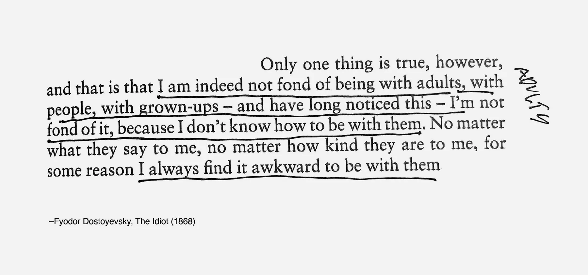
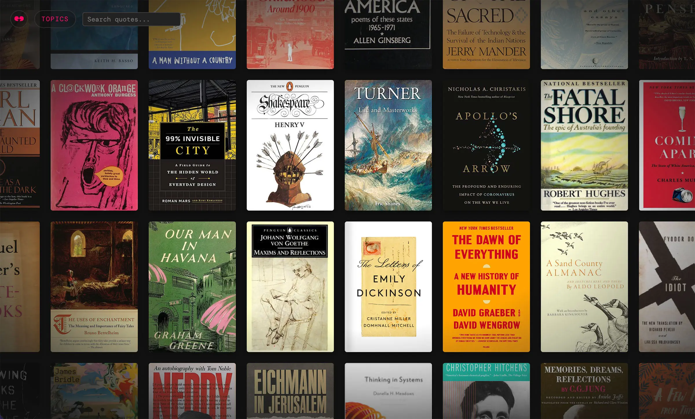
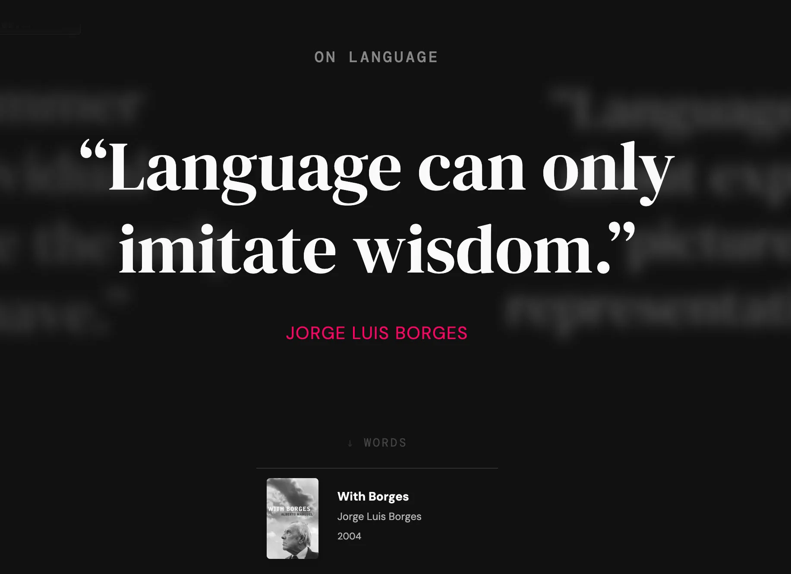
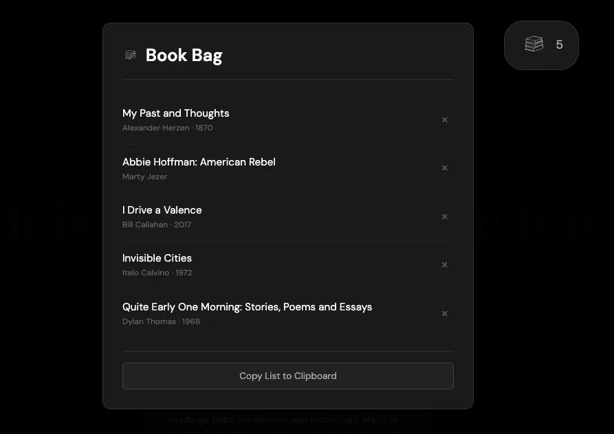

Every Epigram
A habit from grad school stuck with me: copying out passages that felt worth keeping. A dozen years and 3,500 quotes later, the collection had outgrown Flickr, where I'd been saving them as tagged images. I needed a way to actually use them.

One of the thousands of quotes I'd saved on Flickr...
This became an experiment in building a personal reference system. I worked with AI to turn my photos of book pages into structured, searchable text, then mapped the themes running through the collection.

I gathered book covers using LibraryThing and used them as an initial hook into the site.
The result is a library you can move through by association rather than index. You might start with memory, drift into time, then land somewhere unexpected. Along the way, you can gather books worth returning to.

Selecting a cover image reveals a quote from that book, as well as a theme.

Visit the collection at everyepigram.com